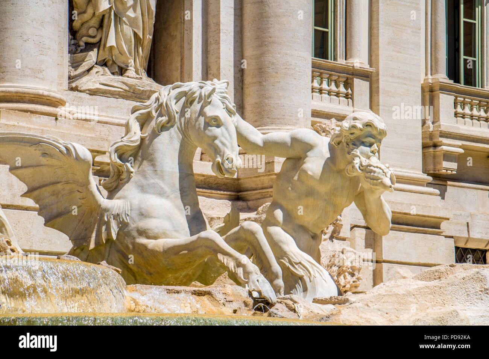
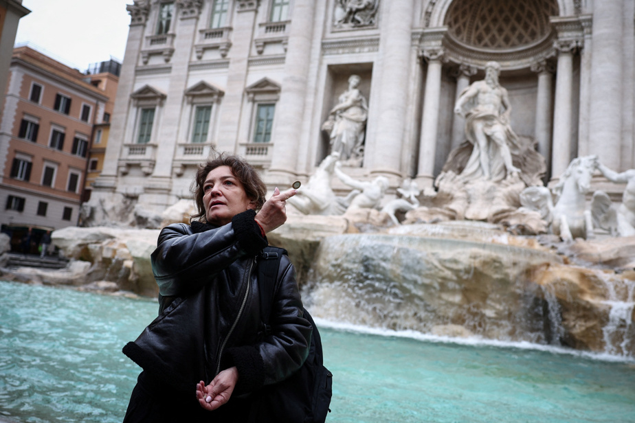
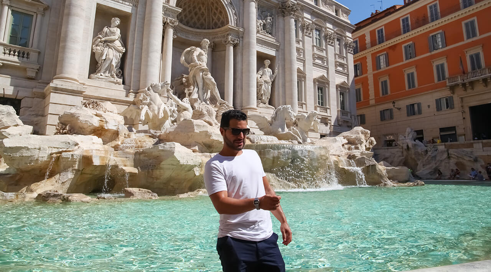
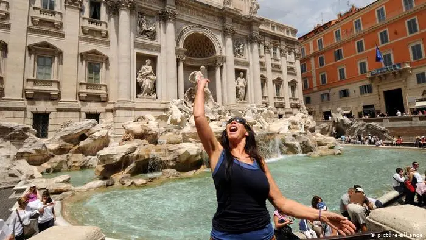
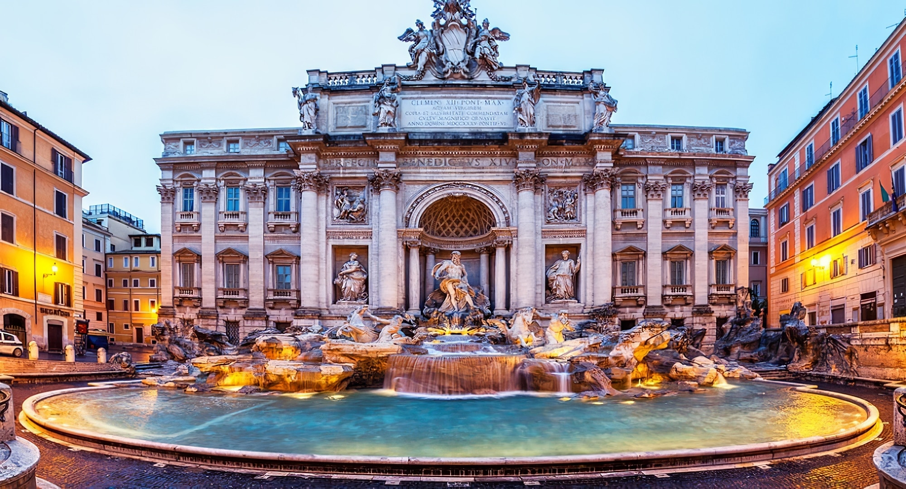
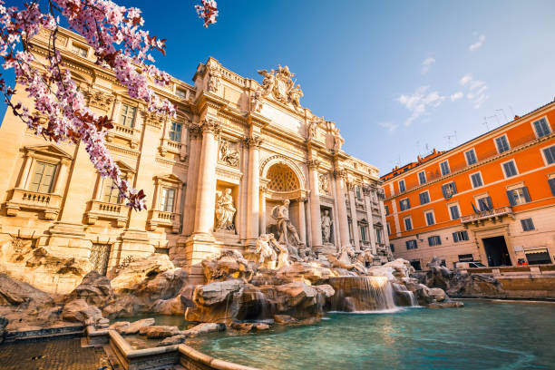

Aujourd’hui, je vais vous présenter la fontaine de Trévi, l’un des monuments les plus célèbres de Rome et même du monde. Située au cœur de la ville, cette fontaine impressionne par sa taille, sa richesse artistique et son histoire. Construite au XVIIIᵉ siècle, elle est connue non seulement pour sa beauté, mais aussi pour la tradition populaire. À travers cet exposé, nous allons découvrir :
Il y a différentes hypothèses sur l’origine du nom de la fontaine la plus célèbre de la Ville Éternelle. La plus réaliste est que le nom dérive de « trivium », c’est-à-dire le croisement entre trois rues. La deuxième hypothèse est que "Trivia" est un nom associé à Diane, déesse liée aux carrefours et aux lieux sacrés. Cette hypothèse est surtout symbolique ou religieuse et repose sur des interprétations tardives et des traditions locales. La troisième hypothèse fait référence à Juturne, la nymphe invoquée pendant la sécheresse et qui avait un temple appelé « Trevi ». Aucune preuve ne montre que ce temple s’appelait bien ainsi, mais cette hypothèse reste ma préférée.
La tradition la plus connue de cette fontaine est que si vous lancez une pièce dans l’eau de la fontaine de Trévi, vous retournerez à Rome et cela vous portera chance.
Si vous en lancez deux, vous tomberez amoureux ou amoureuse d’un Italien ou d’une Italienne.
Si vous en lancez trois, à l’amour s’ajoutera le mariage !
L'argent qui est jeté est redonné à des œuvres caritatives : environ 1,5 million d'euros par an.



Attention, pas n’importe quel lancer ! On voit bien sur les photos qu’il y a plusieurs points communs. Les règles pour que le lancer soit correct sont très strictes :
Il faut tourner le dos à la fontaine de Trévi et jeter votre pièce dans le bassin de la main droite par-dessus votre épaule gauche.
L’autre tradition, aujourd’hui presque disparue, est celle du verre. Autrefois, lorsque les jeunes hommes devaient partir travailler loin ou pour le service militaire, leurs fiancées leur faisaient boire l’eau de la fontaine dans un verre neuf, puis le cassaient elles-mêmes. Cet acte symbolisait un pacte de fidélité éternelle.
Aujourd’hui, il existe une autre version : les deux amoureux boivent ensemble à la « Fontanina degli innamorati » située à droite du monument. C’est une façon de s’assurer de rester fidèles pour toujours.
La Fontaine de Trévi se situe à Rome et marque l’arrivée de l’ancien aqueduc Aqua Virgo, construit à l’époque de l’empereur Auguste. Au XVIIIᵉ siècle, les papes souhaitent transformer l’ancienne fontaine terminale en un monument spectaculaire reflétant la puissance artistique de Rome.
Le pape Clément XII lance un concours pour ériger une grande fontaine monumentale. L’architecte Nicola Salvi remporte le concours et commence les travaux. Il crée un décor théâtral typique du baroque romain.
La fontaine est réalisée principalement en travertin, pierre extraite près de Tivoli. Les travaux sont complexes et coûteux, ralentis par des problèmes financiers et techniques. Nicola Salvi meurt avant la fin du chantier. La fontaine est achevée en 1762 par l’architecte Giuseppe Pannini sous le pontificat de Clément XIII.
Dans la niche principale, nous pouvons voir le dieu de l’Océan, Océanus. À ses côtés, deux hippocampes, mi-cheval mi-poisson, incarnent les deux visages changeants de la mer : l’un fougueux, l’autre apaisé. Ces créatures sont maîtrisées par deux tritons, figures mythologiques messagères des dieux de la mer. Ce duo allégorique illustre les humeurs instables de la nature, oscillant entre tempête et calme.

En levant les yeux vers le sommet de la fontaine de Trévi, on distingue le blason du pape Clément XII. Ce blason est intégré à la façade du palais Poli, qui sert de décor architectural à l’ensemble. Les statues situées dans les niches supérieures sont celles de l’Abondance et de la Salubrité, deux figures allégoriques liées aux bienfaits de l’eau.
La fontaine célèbre avant tout l’importance de l’eau potable apportée à Rome par l’aqueduc antique. Prenez le temps d’observer les détails, les courbes, les couleurs et les reflets des sculptures en marbre et travertin. Quand la nuit tombe, les jeux de lumière et le mouvement de l’eau donnent l’impression que les bas-reliefs s’animent.
Hauteur : environ 26 mètres
Largeur : environ 49 mètres
C’est la plus grande fontaine baroque de Rome.



La fontaine a une phrase écrite au-dessus de la niche principale : PERFECIT BENEDICTUS XIV PONT. MAX. Cela signifie : « Benoît XIV, souverain pontife, a achevé la fontaine de Trévi ». Elle fait référence au pape Benoît XIV, sous dont le pontificat la fontaine fut terminée.
Cette fontaine n’est pas qu’une fontaine ordinaire, mais un monument extraordinaire avec une longue histoire, des traditions uniques et une architecture magnifique qui attire des millions de touristes chaque année.